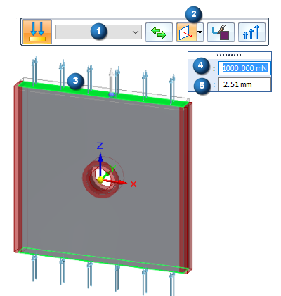
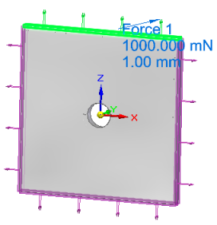

Force load
Applying a load as a boundary condition in a generative design study is part of the Generative Design workflow.
Use the Generative Design tab→Loads group→Force command to apply a force load boundary condition to selected geometry to be used in a generative design study.
Force load inputs
When defining a force load, you use the Loads command bar for generative studies and the dynamic input edit boxes to specify:
-
Geometry—The face or feature on which to apply the force load.
-
Direction—The direction of the force load. Use the Direction Type list on the command bar to specify the method for defining the force load direction.
-
Offset—This is the additonal material volume to keep where the load is applied. The Offset value that is displayed as a default is the recommended value based on the volume of the design space and the study quality.
If set to zero, then no offset volume is created, and the face where the load is applied is subject to removal during optimization.
-
Force value—The force magnitude.
(1) Selection Type=Face.
(2) Direction Type=Normal to Face
(3) Geometry where the load is to be applied.
(4) Force value
(5) Offset value

Editing a force load
The load symbols are added to the selected geometry in the design space, and an edit definition handle is shown on the design body, with a label such as Force 1. You can use this handle to edit the inputs that created the load.

A corresponding entry is added to the Generative Design pane, under the Loads node, as Force 1.
-
To review the values assigned to the load, hover over the label name in the Generative Design pane, or click the label to display the handle on the body.
-
To edit the load, double-click the label in the Generative Design pane, or click a displayed handle on the body.